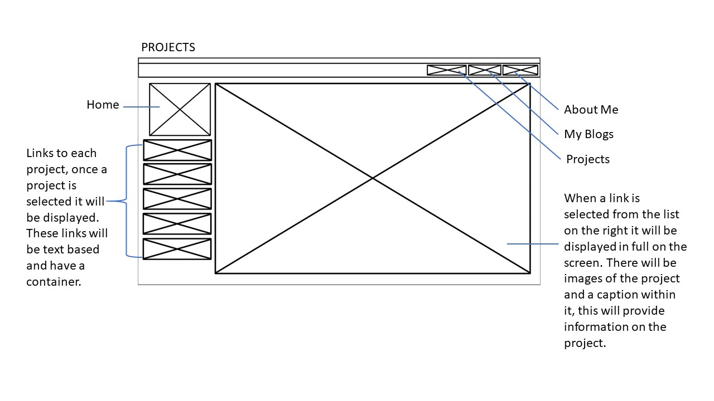
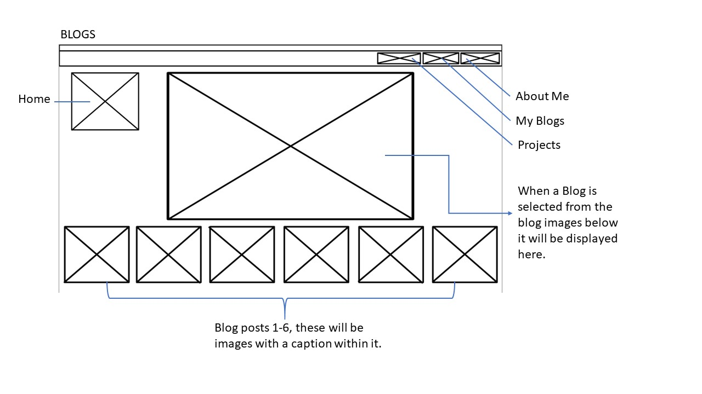
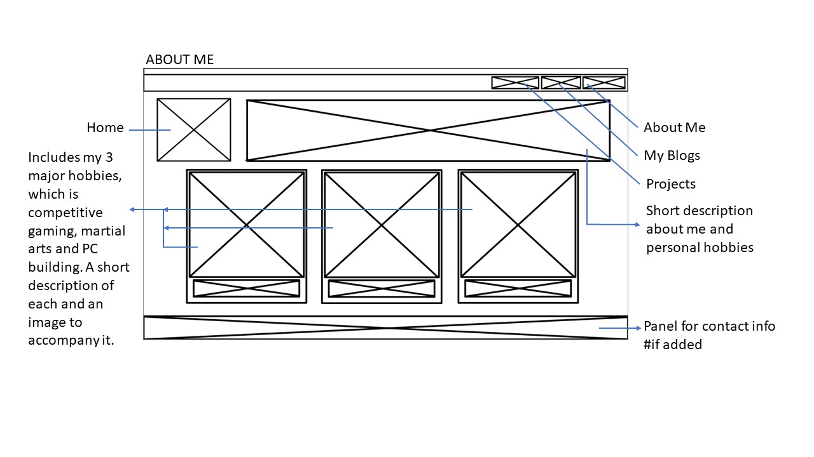

<!DOCTYPE html>
<html prefix="og: https://ogp.me/ns#"></html>
<html>
<head>
    <title>Levashan Pillay</title>
    <meta charset="UTF-8">
    <meta name="viewport" content="width=device-width, initial-scale=1.0">
    <link rel="stylesheet" type="text/css" href="CSS/stylesheet.css">

</head>
<body>
<header>
      
        <nav>
            <ul>
                 <li><a href="Projects.html">Projects</a></li>
                 <li> <a href="Blog.html">My Blogs</a></li> 
                 <li> <a href="About.html">About Me</a></li>
            </ul>
          
         </nav>
</header>
    <main>
        <a href="index.html"></a>
        <h1>Blogs</h1>
        <br>
    </main>
<section class="Blog-subbody">
    <ul>
        <article class="blog1" data-columns="1"
        data-index-number="1"
        data-parent="Blogs">
        <li>WireFrame</li>
        <br>
        
        
        
        
        </article>
        <br>
        <article class="blog2" data-columns="2"
        data-index-number="2"
        data-parent="Blogs">

        <!--
        
            Javascript:
        const article = document.querySelector('class');
 
        article.dataset.columns // "3"
        article.dataset.indexNumber // "12314"
        article.dataset.parent // "Blogs"
    
            css:
        article::before {
            content: attr(data-parent); 
                        }
        article[data-columns='3'] {
             width: 400px;
                }
        article[data-columns='4'] {
             width: 600px;
                }                  
        -->

        <li>As We May Think</li>
        <br>
        <br>
        <h2>The Relevance of Vannevar Bush’s theory “As We May Think” to the design of the User Interface in computer technologies.</h2>
        <br>
        <p>Humans understand things through their connection to other things. 
            The word chair has no meaning without its connection to the physical object, this is the abstraction of information that is produced through a link between the signifier, which is the term or symbol that holds the meaning (word “chair”), and the signified, the meaning (physical “chair” (physical or conceptual)). 
            If we think about a “chair” our mind also trails to things that we associate with it, like the texture, style or desk that we can relate to a “chair”, which has no limits.
            If our mind drifted off to another concept, trails associated with “chair” would fade. Vannevar Bush was concerned with how the computer interface could help, he suggests that the human cognitive and interactive processes are far superior to that of the interactions and presentation of data produced by the computer. 
            In that case the computer should adapt to accommodate human needs not the other way around. 
            The reason why I am linking Vannevar Bushes theory is because 60+ years later and his theory is more relevant today than it ever was. 
            Today we see his theory in practice when we search the web, for instance you search “bleached hair” on the web, not only will there be images related to “bleached hair” but their will be video tutorials on how to bleach your hair, studies on how bleach damages hair and how to make your bleached hair healthy again, you get the point.
            This algorithm follows a similar concept to what Vannevar Bush theorized how a computer should adapt to the needs of the human. 
            Similarly, Simon Harper who wrote an article on Vannevar Bushes theory titled “As We May Think at 65” states that, “the human mind operates by association and as the mind grasps onto one item it naps to the next that is suggested by association of thought in accordance with some intricate web of trails”. 
            Keeping that in mind, algorithms that are now developed for the web are trying to replicate this cognitive flow by categorizing information and linking them by any connections or relevance to each other.
            The future of the web will succeed the theory presented by Vannevar Bush and web trails of relevant information as effective and the human mind itself. </p>
    
        </article>
        <article class="blog3" data-columns="3"
        data-index-number="3"
        data-parent="Blogs">

        </article>
        
        <li>blog 3</li>
    </ul>
</section>


  
</body>


</html>